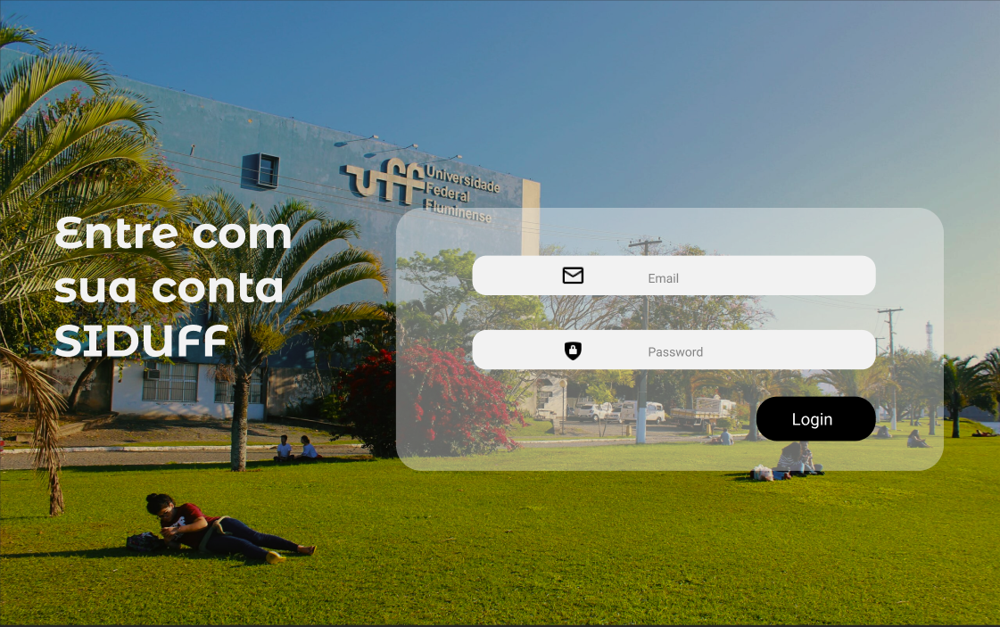
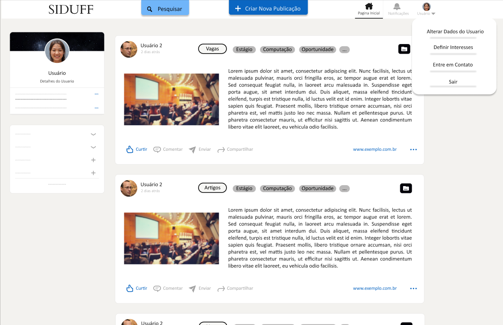
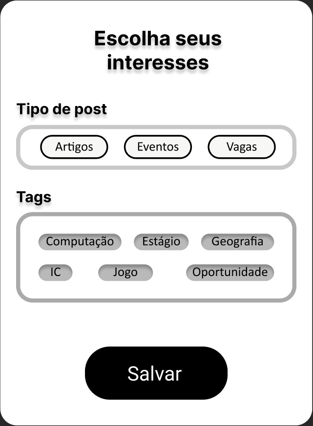

Sintese e Prototipação
Segunda fase do projeto onde serão criados as Personas, Cenários, Modelo de Tarefas e a Prototipação.
Personas
As personas trazem uma descrição detalhada de usuários típicos, buscando capturar as características dos usuários.
Felipe Lacerda Soarez
42 anos, solteiro, professor
Desenvolveu seu primeiro jogo quando tinha apenas 14 anos e continuou desde então. Programar se tornou uma parte fundamental do trabalho e da diversão na vida de Felipe Lacerda. Formado em Ciência da Computação pela Universidade Federal Fluminense(UFF), Felipe anos depois de trabalhar em muitas startups como engenheiro de software freelance começou a lecionar na UFF e desde então se tornou seu objetivo tentar todas as formas possíveis para formar grandes profissionais. Felipe tem inglês fluente, e alemão avançado, tem amplo conhecimento em Python, Software Engineering, Software Design, Multithreading, ML, Performance Testing, Bash, Git, C++, C, Java, JavaScript e OS X.
Sarah Müller Perez
27 anos, solteira, estudante
Sarah é aluna do curso de Ciência da Computação na Universidade Federal Fluminense(UFF) e está cursando o quarto semestre do curso. Seus estudos e interesse em programação começaram desde muito nova, influenciada pelo seu pai, que era um grande desenvolvedor sênior. Atualmente, Sarah trabalha apenas com projetos pessoais para por seus conhecimentos em prática e adquirir mais experiência na área de TI. Tem inglês fluente, um ótimo conhecimento em desenvolvimento web, Python, C++, Machine Learning, MySQL, Java e JavaScript. Dentre seus vários projetos Sarah está trabalhando há alguns anos no seu maior projeto, o desenvolvimento de um jogo utilizando C++, e adora participar de eventos relacionados a jogos para ajudá-la a acrescentar melhorias em seu projeto.
Cenários
Um cenário é uma história sobre pessoas realizando uma atividade.
Publicação de vaga de estágio
Felipe Lacerda, como trabalhava numa empresa de jogos recebeu uma
informação de
um conhecido sobre a abertura de um processo seletivo para vagas de estágio. Interessado em divulgar para
seus alunos, Felipe decidiu mandar um email para todos os alunos que o disponibilizaram.
Sarah por já receber muitos emails sobre estágio que não se interessava, acabava não os olhando, por isso
acabou perdendo uma boa oportunidade.
Felipe Lacerda percebeu que nao recebeu muitas respostas, mesmo tendo enviado o email para todos alunos e
ex-alunos. Então, decidiu procurar outras formas de
divulgação para que mais alunos pudessem se engajar.
Evento Perdido
O projeto de extensão "GAMUFF: criações de jogos de plataforma" promove o evento "Diálogos com a GAMUFF", que acontecerá entre os dias 05 de novembro até o dia 4 de dezembro de 2022. Os encontros, que abordam o desenvolvimento de jogabilidades,serão quinzenais, com participação de palestrantes convidados e aberto a todos que se interessem por esta temática. O evento foi divulgado no site da UFF e em redes sociais. Sarah, como trabalha num projeto de desenvolvimento de um jogo conseguiria muito conhecimento e experiência se participasse do evento, porém como é muito ocupada acabou não sabendo de seu acontecimento. Em relação ao evento poucas pessoas acabaram indo por não ter uma divulgação tão abrangente. O organizador do evento identificou então que era necessário um novo meio de divulgação.
Modelos de Tarefas
Nessa etapa foi feito uma análise de tarefas para se ter um entendimento melhor sobre qual é o trabalho dos nossos usuários, foi utilizado o Modelo Hierárquico de Tarefas Adaptado.
Publicação de vaga
Definir Interesses

Pesquisar Evento
Prototipação
Nesta etapa fizemos a prototipação do projeto.
Tela Inicial do Sistema

Está seria a pagina inicial do sistema onde o usuário ao acessar o sistema teria acesso a busca do sistema e aos últimos posts criados, porém não teria acesso as funcionalidades de usuário interno (Criar Post, Curtir Post, Mandar mensagem para usuários internos, alterar informações pessoais de usuários e definir interesses). Para ter acesso a mais funcionalidades o usuários faria seu login.
Tela de Login do Sistema

Está seria a tela de Login do Sistema, onde o usuário publico faria seu login e se tornaria usuário interno.
Tela Inicial do Sistema Usuários Logado

Está seria a pagina inicial do sistema onde um usuário que está logado teria acesso as funcionalidades de usuário interno, sendo elas todas as funcionalidades do usuário externo mais as funcionalidades internas, curtir um post, criar um post, definir interesses, comentar um post e trocar mensagens com outros usuários.
Fomulário de Postagem

Está seria a tela de Formulário de Postagem do sistema, o usuário interno poderia criar uma nova postagem inserindo os dados necessários nessa tela. Esta tela apareceria, ao clicar em Criar Nova Publicação, sobre a tela inicial.
Fomulário de Pesquisar

Está seria a tela de Formulário de Pesquisa no sistema, o usuário poderia a qualquer momento pesquisar um post no sistema. Está tela apareceria, ao clicar em Pesquisar, sobre a tela inicial.
Notificações
Está seria a tela de Notificações do usuário Interno, o usuário interno poderia a qualquer momento abrir esta tela de notificações no sistema. Está tela apareceria, ao clicar em Notificações, sobre a tela inicial.
Interesses

Está seria a tela de Interesses do usuário Interno, o usuário poderia a qualquer momento mudar os seus interesses. Está tela apareceria, ao clicar em usuário e escolher a opção Definir Interesses, sobre a tela inicial e também no primeiro acesso do usuário interno ao sistema.
1) Voce está aplicando alguma das evidencias de design discutidos nos UXMyths em sua solução?
Aplicamos algumas evidencia de design mostradas no UXMyths algumas delas sendo:
2) Voce aplicou Lei de fits em alguma parte do seu design?
Aplicamos a Lei de Fits no design dos botões, colocando eles no topo da pagina com extensão ao infinito para diminuir o tempo de clique, na pagina de login usamos os campos de escrita maiores e com o botão de login grande pra diminuir o tempo geral.
3) Voce aplicou lei de hick Hyman em alguma parte do seu design?
Aplicamos a lei de hick Hyman no momento que o usuário pode escolher entre as opções do menu de usuário interno, tendo 4 opções de escolha em ordem alfabética, deixando o tempo de escolha para aproximadamente 348,29ms pela formula.
4) Voce usou outras leis ou princípios de design?
Utilizamos do principio do Don Norman, o de Visibilidade pra deixar as funções mais importantes bem visíveis ao usuário, o de Feedback para dar um foco maior ao passar o mouse sobre os botões e o principio de Affordance nas aparências de botões.
5) Voce aplicou algum principio de gestalt no seu design?
Utilizamos o principio da boa continuidade, a qual o design proporciona entender que há a opção de rolar a tela, já que o site continua mais abaixo Foi utilizado o principio da região comum ao utilizar as tags, links e botões de interação com a postagem, já que cada um define um grupo com características similares.
6) Quais outros recursos (artefatos interativos) voce prototipou para alcançar suas metas de design?
Como foi dito utilizamos de alguns artefatos sendo eles:
7) Sua persona(s) e cenário(s) estão sendo atendidos com a prototipagem das tarefas desenvolvidas?
As personas e cenários estão sendo atendidos, a partir do desenvolvido, Sarah Müller consegue ver propostas de vagas que lhe chamam atenção sem receber propostas que não são de seu interesse. Além disso, recebe informações de todos os eventos que lhe interessam. O professor Felipe Lacerda consegue encontrar alunos interessados por sua divulgação de vaga e muito mais pessoas podem comparecer a eventos divulgados no sistema.
8) Como o grupo aplicou os conceitos da Engenharia Cognitiva no seu design?
Aplicamos o conceito da Engenharia Cognitiva entendendo o objetivo do usuário. A partir disso foi possibilitado que o sistema oferecesse ações que correspondem às intenções do usuário, feito isso analizamos a melhor maneira de passar pelo golfo de avalição. Dessa forma, foi definida uma maneira simples de fazer com que o usuário alcance seu objetivo de forma a não perder tempo. Portanto as ações no sistema acabaram sendo bem simplificadas e o usuário somente precisa percorrer por processos em uma etapa.
9) Como o grupo aplicou os conceitos da Engenharia Semiótica no seu design?
Os conceitos da Engenharia Semiótica formam aplicados com base na experiência que o publico alvo tem com redes sociais. Como redes sociais são sistemas amplamente utilizados já se sabe como os usuários utilizariam o sistema. Além disso, foi verificada a necessidade dos usuários e seus interesses.
Copyright © 2021 - All Rights Reserved - Gruple
Template by OS Templates